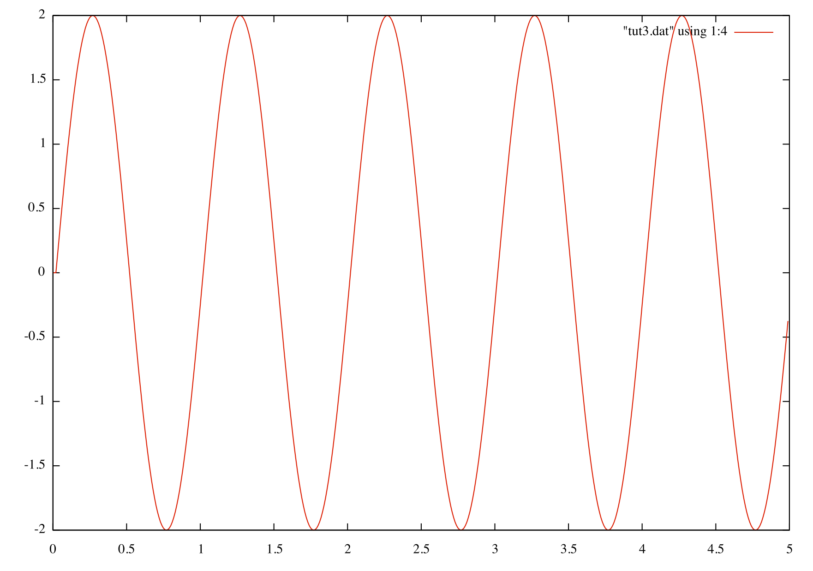

Building a composite circuit
Lets first start by creating the composite circuit so we as per usual start the mandatory imports;
So to start building the compisite circuit we first must create a function with the following arguments, the name of the function will be the name of your compisite circuit so you can make that what you desire, but for now lets call it ADC.
A composite circuit has input and output channels similar to regular circuits, so we must define these. You can name them whatever you want but each one must be unique, below we have added two input channels named "signal1" and "signal2" and one output channel named "out";
Now we have created the signal channels next is to add the addition circuit that we require.
Just like in a regular input file we still must connect the channels but this time we have channels that are associated with the composite circuit so in order to access these channels we must use the global affix followed by .channel name;
Finally its a nice idea to add a print statement to let you know when the circuit has been added;
So the final compisite file should look like this (notice the indentation if you aren't familiar with python) ;
Now the main input file will be created, first as always we include the modules but this time we must also include the composite circuit;
Lets now initialise our machine and add a waver circuit just like we did in tutorial 6.1
Now we must add our composite circuit, its done in more or less the same way as regular circuit except we must use the assembly parameter, this parameter must be made equal to the function name of that composite circuit so for example in this case its ADC. This parameter is not a string so do not use inverted commas as shown below;
Now lets add our output circuit and register the channels we need;
Notice that the circuit compo1 is using the output channel name that you set earlier in the other file.
Next we must connect the channels as we have done in previous input files and again we will use the composite circuits input channels that we defined earlier;
Finally lets ask the machine to wait for 5 seconds;
So our final input file should look like this;
When you run and plot the output you should get something looking like figure 4 which resembles what we got in tutorial 1.

 1.8.9.1
1.8.9.1